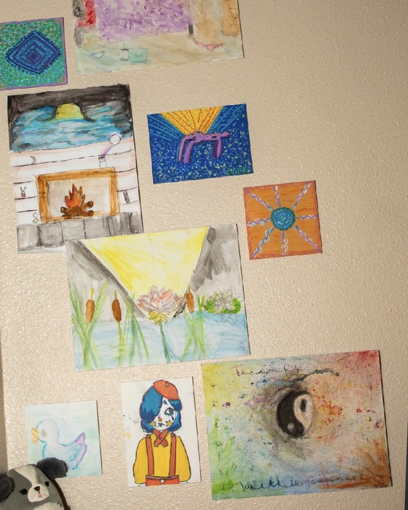

Individual Therapy
Holistic, trauma-informed therapy for anxiety, depression, trauma, and the sacred work of coming back home to yourself.
Learn moreParenting Support · Mesa, AZ
Therapy for the human raising the kids. Support with Positive Discipline, the manual we never got when they were born.
And sometimes you need some help figuring out how to do it different. Because this matters too much. They matter too much.
Maybe you're snapping more than you want to. Maybe you're carrying guilt that follows you into every quiet moment. Maybe you're parenting in ways that look nothing like how you wanted to, and you can hear yourself sounding like the version of your own parent you swore you'd never become. Maybe a teenager just slammed a door, or a baby won't sleep, or you got divorced six months ago and you're still figuring out how to do bedtime alone.
This page is for you, and for them. So you can show up the way you always dreamed.
Let's talk about what this really is.
This isn't family therapy with your kids in the room. It isn't a workshop on consequences and reward charts. There are great resources for that, and they're not me. This Parenting Support is deeper than that, and multi-faceted - we explore the challenges and explore healthy parenting, based on a research-based model that teaches skills rather than punishes behavior. It's active vs reactive parenting.
Parenting Support is a space for you to process what parenting is bringing up in you. The exhaustion. The grief. The unprocessed stuff from your own childhood that's quietly running the show. The version of yourself who shows up in your kiddo's worst moments and behaves in a way you don't want to admit. The shame that lives underneath all of it.
Parenting is one of the most spiritual, sacred, body-and-soul-rearranging experiences a human can have, and almost nobody talks about how hard it is to do it without losing yourself.
This space is for you to be seen as the parent, and to learn a different way of navigating the most powerful experience on this planet. Positive Discipline teaches us how to create the relationships with our kiddos we truly desire. How to understand and navigate their meltdowns. How to handle their emotions, and help them learn to regulate them. How to handle challenging behavior beyond punishments and consequences, because those don't work as well as we want to believe. Positive Discipline helps us be in connection and cooperation, so the days flow with greater ease instead of conflict.

"As a single mom, I know how challenging it is to do life and parent well."
As someone who has made mistakes and isn't afraid to share them, I've recognized that a lot of the time, with my kids, I'm the problem. I have the power to help in the moment or to make it worse. How we show up as parents truly does make a difference.
Lots of parents are encouraged or advised to bring their kiddo in for therapy. Sometimes that's the path. I recommend parents go first. Often with Positive Discipline I can help you figure out how to handle their moments with greater ease, with ways of showing up that actually work.
Beyond consequences and punishments
What your childhood is bringing up in you
No judgment, just compassion and honesty
A single mom of two neurodiverse boys

Parenting can feel like the loneliest job in the world, even when you're surrounded by people. This space is yours. To set down the weight, untangle the guilt, and remember who you are underneath all the roles you carry.
A free consultation to figure out what you need. No judgment.
Schedule Free ConsultationFifteen minutes. Tell me what's going on. I'll tell you how I work. We'll figure out if this is the right fit.
50 minutes, just you (or you and a co-parent). We'll talk about what parenting is bringing up for you and what challenges you're currently struggling with. No judgment.
Grow as a parent. Learn the skills of Positive Discipline to foster relationship, increase cooperation, and enjoy time with your kids. Weekly or every other week, in-person in Mesa or secure telehealth across Arizona. Superbills available.
Kiddos' behaviors are challenging. You're not enjoying them. And you feel stuck.
Parenting Support is held the same way as our individual therapy. 50-minute sessions, weekly or every other week, in-person at our Mesa office or via secure telehealth across Arizona. Sessions range from $85 to $185 depending on which therapist you work with, out-of-network with superbills available.
You can come alone. You can come with a co-parent if that feels right. You can bring your kiddo.
I thought I was coming to learn how to be a better mom. What I actually got was permission to be a human who is also a mom. Alicia gets it because she lives it. That makes all the difference.
Whenever the version of you that shows up at home doesn't match the parent you want to be. You don't need a crisis. You just need to feel like something needs to shift.
No. This is so much more. Here we'll explore the challenges you're having in the world of parenting to figure out what's happening for you as the parent, and for your child. You'll then learn and practice Positive Discipline techniques to create a healthier parent-child dynamic, and help your child grow and develop.
There are no "problem kids." There are kiddos with unique challenges, temperaments, and ways of navigating their childhoods. And yes, those parents need support. This is also for the parent who feels overwhelmed and burnt out, or who wants to figure out a different way to parent to build a healthier relationship.
Yes. We can do co-parent sessions if that's useful. That said, Parenting Support is a different thing from couples counseling. If your relationship is struggling, please let me know. We can discuss all of these things during couples work.
Family therapy includes the whole family system, often with kids in the room. Parenting support is one-on-one (or two-on-one) with you, the parent. The kids are not the focus. You are.
Holistic, trauma-informed therapy for anxiety, depression, trauma, and the sacred work of coming back home to yourself.
Learn more
If the relationship is struggling too, couples work runs alongside parenting support, or on its own.
Learn more
Parenting circles, healing communities, and the kind of support that comes from knowing you're not alone in this.
Learn moreReach out for a free consultation. Let's figure out what you need.